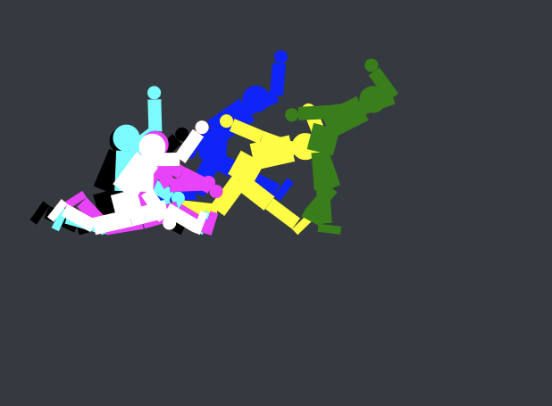
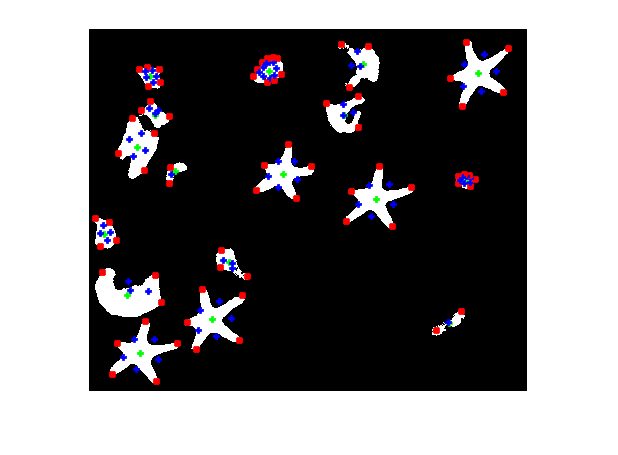
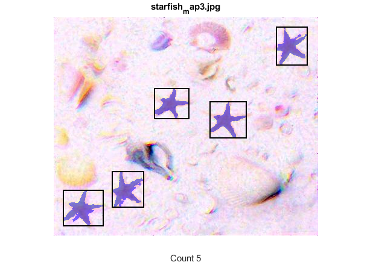
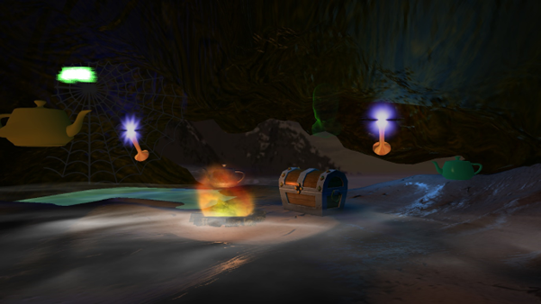
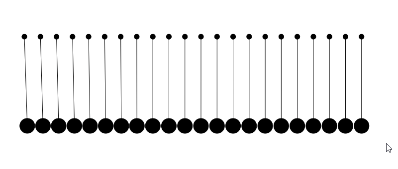

Experienced in many areas of software, including web, mobile, and game development.
Achieved a first in every module during CS undergrad, in addition to an award for highest grades in year 1.
Participant in multiple Game Jam events and extra curricular activites such as the Nasa Space App Hackathon.
Notable university projects

Simulation in which a 2D biped model optimises a walking motion through genetic algorithms and neural networks. Features a custom nodegraph interface to control the parameters of the simulation, for instance how the individual joints connect to an AI controller.

 Through use of a novel computer vision algorithm, starfish are indentified in a variety of beach images affected by varying levels of noise.

Creation of 3D 'pirate cove' that featured a number of shader and 3D techniques, including fog, skyboxes, animation, and special effects.

2D physics sandbox using verlet and euler integration. User can create a variety of shapes and interact with objects using the mouse. Features quad-tree collision detection optimisation and a scene graph implementation.